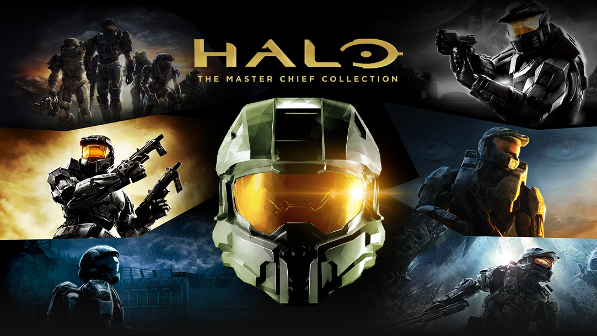

MENU PRINCIPAL
As Conquistas mais Difíceis do Xbox 
Aqui está a lista de Platinas mais Difíceis do Xbox, então sente-se, pegue o seu controle e vamos para a ação (Lembrando que elas não estão em ordem de dificuldade).
1. Injustice: Gods Among Us

Começamos a nossa lista de forma bem frenética: Injustice 1. Nesse jogo, você batalha com os Super-Hérois do Universo da DC Comics. Na história, o Coringa põe em prática planos diabólicos contra Superman: destrói a sua cidade, Metrópolis, e executa a sua família, o que faz com que ele fique obcecado em estabelecer a paz no mundo, obrigando-nos a ter que lutar contra ele.
O jogo possui troféus misturados: alguns muito fáceis de se conseguir e outros bem trabalhosos. Um desses troféus pedem que o jogador atinga o nível 100, sendo necessário para isso "farmar" aproximadamente 50.796.671 de XP; Outro pede que concluímos os 20 modos de batalha, em que o último se chama "Modo Impossível", nele você deve lutar contra todos os personagens no modo mais difícil do game. A dificuldade de 1000G desse jogo está entre 99/100 e 100/100.
3. Hollow Knight

Hollow Knight é um jogo indie do gênero metroidvania, muito aclamado pelos jogadores. O game conta com belos gráficos desenhados à mão, trilha sonora marcante, além de jogabilidade precisa e desafiadora, o que deixa a Platina/1000G uma tarefa bem difícil e trabalhosa.
Para fazer o 1000G desse jogo é preciso: adquirir um mapa de cada área, coletar 600 Essências, coletar 1800 Essências e despertar o Ferrão dos Sonhos. Coletar 2400 Essências e ouvir as palavras finais da Vidente.
Esse jogo tem a dificuldade de 1000G de 82/100.
5. Gears 5

A série de conquistas denominada Seriously em inglês é uma parte integrante da franquia Gears of War, recebendo diversas traduções diferentes em português a cada título, mas sempre com uma coisa em comum: extremamente difícil de atingir e envolvendo um grande nível de paciência e dedicação.
Porém, a do quinto game realmente serve como um teste extremo para os jogadores, exigindo completar a campanha no nível Insano, alcançar todas as conquistas em Horda e Fuga, 20 Realistamentos e ainda chegar ao nível de General em Expedição.
7. Limbo

Este fofinho jogo 2D monocromático tem uma conquista que pode ser considerada bem enganosa. Para alcançar No Point in Dying, só é preciso completar o gameplay inteiro - que possui em média de quatro horas de duração - morrendo no máximo cinco vezes
Realmente não parece uma tarefa complexa e que pode ser alcançada com uma boa dose de paciência e prática, não é mesmo? Contudo, a pequena porcentagem de jogadores que conseguiram superar esse feito prova que ele está longe de ser tão fácil assim, mostrando que Limbo, assim como muitos títulos plataforma, podem ser mais desafiadores do que muitos de nós esperam.
9. Outlast II

Presente nos dois jogos da franquia Outlast, a conquista Messias envolve concluir a aventura no Modo Insano sem recarregar a bateria da câmera nem uma vez.
Para isso, é preciso entrar em um racionamento inteligente da fonte de iluminação, descobrindo exatamente os momentos certos de utilizar o aparelho ou simplesmente avançar por áreas menos perigosas tateando pelo escuro, e tudo isso, é claro, na maior dificuldade oferecida pelo survival horror.

2. Batman: Arkham City

Batman: Arkham City é o segundo jogo da saga Batman Arkham e a continuação de Batman Arkham Asylum. O jogo é considerado por muitos como o melhor jogo de super-heróis de todos os tempos e o melhor jogo da série. O game conta uma gameplay muito boa, que envolve Combate e Stelfie, tendo ambas mecânicas incríveis e muito avançadas. Além disso, a história do jogo é ótima, cheia de Puzzels e uma história impecável.
Mas nem tudo são flores: Para a Platina é necessário fazer todas as Side Quests; coletar todos os troféus do Charada, que são 400 (440 com a DLC da Mulher-Gato) ; fazer todos os desafios de Ranking e Campanhas do Charada. Isso sem contar as DLC's, que deixam a platina desse jogo mais trabalhosa ainda.
Esse jogo tem a dificuldade de 1000G de 94/100.
4. Cuphead

Cuphead é um título indie no estilo run and gun que apresenta um visual cartunesco inspirado nos desenhos de 1930. Os áudios e os elementos visuais do game foram produzidos com a mesma técnica dos cartoons da época. O game é altamente focado nas batalhas de chefes e possui um gameplay altamente difícil.
A dificuldade para fazer 1000G está mais ligada ao gameplay do jogo do que às próprias conquistas, que não são muito difíceis.
Esse jogo tem a dificuldade de 1000G de 78/100.
6. Halo: The Master Chief Collection
Não tem como falar de Xbox sem falar de Halo não é mesmo? E a conquista que coloca esta coletânea na lista é Mestre LASO, que envolve concluir as campanhas dos jogos na maior dificuldade disponível, com todas as caveiras modificadoras de jogabilidade ativadas.
Isso significa enfrentar inimigos mais fortes e agressivos com pouca munição e menos checkpoints ainda - isso quando eles estão disponíveis para começar - tornando o gameplay extremamente desafiador e até um tanto desesperador.
8. Metal Gear Rising: Revengeance

Metal Gear Rising: Revengeance é um spin-off da famosa série de Hideo Kojima, se passando quatro anos após os acontecimentos de Metal Gear Solid 4: Guns of the Patriots.
Com diversas conquistas complicadas, esse game entrou para lista com Senhor da Tempestade, que só pode ser desbloqueada ao concluir o modo história na maior dificuldade recebendo classificação S em todas as missões, ou seja, sem sofrer nenhum dano na maioria dos combates.
10. Devil May Cry 4: Special Edition

E é claro que essa franquia da Capcom cheia de tiros, momentos espalhafatosos e conquistas complexas não ficaria de fora dessa lista!
Devil May Cry 4: Special Edition tem em sua lista de objetivos House of Pain, que basicamente envolve vencer os cem andares do Palácio Sangrento - um modo sobrevivência repleto de hordas inimigas que vão se tornando mais desafiadoras a cada área.